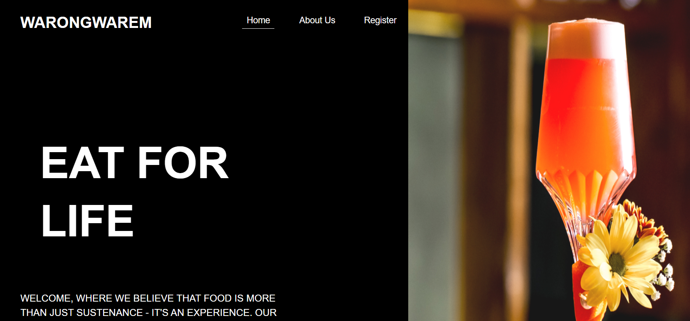
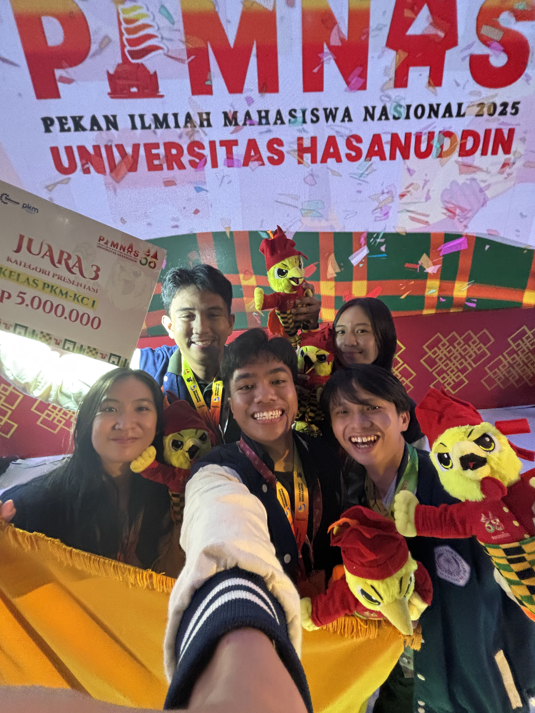
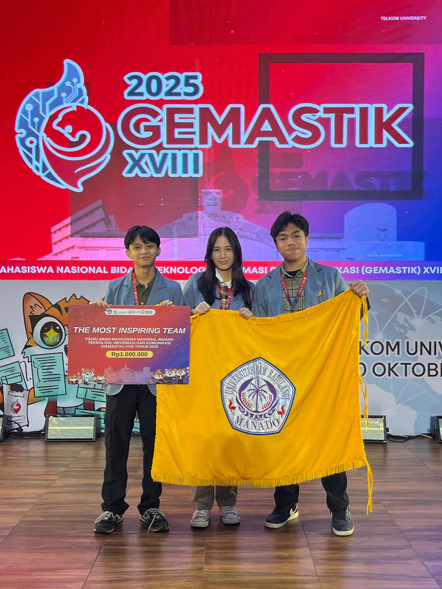
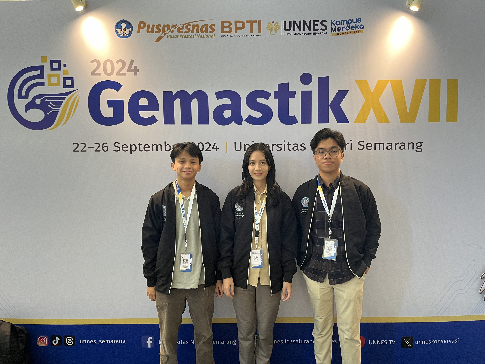

DEEP LEARNING RESEARCH
Multimodal vision systems
Multimodal Parallel Fusion Transformers, CoAtNet, CoaT, contrastive learning, attention interpretation, and model evaluation workflows.
SYSTEM INITIALIZED // GRADUATE PORTFOLIO
Informatics Engineering Graduate | Deep Learning Research & Web3 Systems Architect
Bridging the gap between complex deep learning models and highly resilient, production-ready distributed backends.
CORE ENGINEERING EXPERTISE
DEEP LEARNING RESEARCH
Multimodal Parallel Fusion Transformers, CoAtNet, CoaT, contrastive learning, attention interpretation, and model evaluation workflows.
WEB3 & SYSTEM ARCHITECTURE
Backend systems built around Bun, Hono, Supabase, WebSockets, and automated server-side cryptographic settlement oracles through @solana/web3.js.
PRODUCTION FRAMEWORKS
DEEP TECHNICAL PROJECTS
CORE WEB3 PROJECT
Engineered a high-throughput backend with Bun and Hono, orchestrating WebSocket state management, automated cryptographic settlement oracle execution, Solana Actions API wSOL wrapping, and execution state mirroring through MagicBlock Ephemeral.
GEMASTIK PORTFOLIO
Classification and multimodal fusion experiments translating visual evidence into measurable model behavior across script recognition and fish freshness analysis.
DATA MINING SYSTEM
Applied Association Rule Mining over extensive Indonesian elderly anthropometric datasets to produce deterministic spatial configuration criteria for public facility planning.

SUPPLEMENTAL ARCHIVE
Additional production-style web interface work spanning frontend layout, transactional flows, and data-backed operational screens.
PROFESSIONAL EXPERIENCE
Deployed local, zero-leakage RAG infrastructure utilizing Ollama, n8n, and Supabase pgvector inside the bank's local servers.
Managed a 12-person multidisciplinary engineering cohort building a cross-platform client architecture with Gemini AI and serialized gRPC transmission channels through Flask.
Guided 20+ members through a machine learning foundation syllabus and project-based mentoring track.
HONORS & AWARDS


